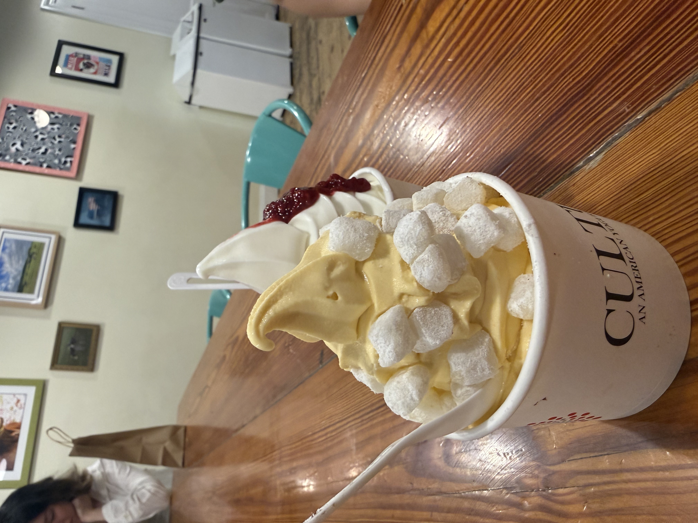
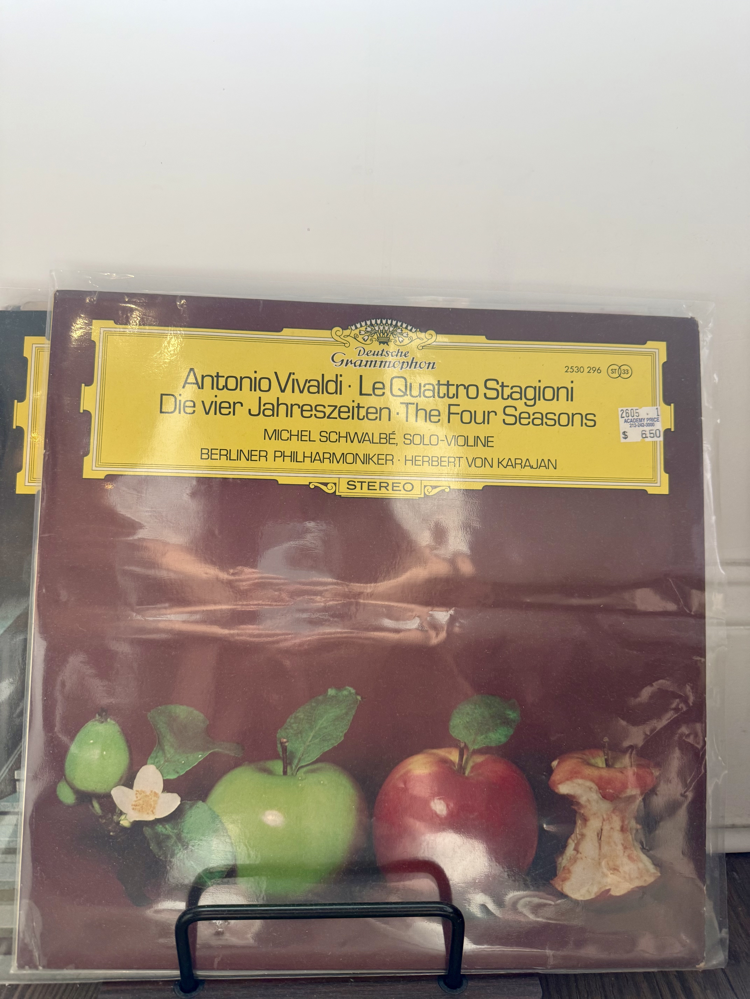

My friend has been obsessed with frozen yogurt, so we had tried frozen yogurt at multiple places including Mimi's, Myka, and 16 Handles.

I ordered Apricot flavored frozen yogurt with mochi and my friend ordered original flavor with rasperry sauce.
The frozen yogurt was very creamy and smooth, and the mochi was chewy.
After a long day spent outside, we went back to our places. To relax and prepare for bed, I put on my vinyl records and listened to some music.

NOW PLAYING
▶
Antonio Vivaldi:Le Quattro Stagioni The Four Seasons
Listen to the four seasons by Vivaldi.